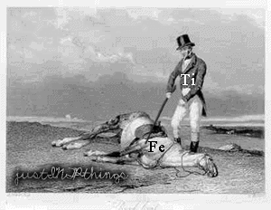

@Thuytien Nói thế nào nhỉ, mình sẽ không đi vào khủng bố bằng wall of text làm gì. Chỉ đưa ra như thế này, cùng một thùng dầu người khác nhìn thấy kerosene và cặn bã, còn Rockefeller nhìn thấy cả gasoline, diezel... và đủ thứ khác. Ví dụ như từ câu trên có thể nhìn ra: 1. You know my reply was a compliment and you don't give a shit about it. Which is totally okay. 2. Bạn BIẾT mình xinh đẹp (cái này khác với bạn biết mình cần trông xinh đẹp). Tuy nhiên bạn không muốn phần đó của bạn được người khác quan tâm. Bạn cũng không quan tâm tất cả mọi người, trong đó mình nghĩ bạn như thế nào. Bạn chỉ quan tâm một số rất ít người, và bản thân bạn nghĩ bạn như thế nào. Mình chắc là trong đầu bạn đã có sẵn những điều bạn muốn làm, và bạn muốn chính những điều đó tạo nên con người bạn. Và cái đứng đầu chắc chắn không phải là trở nên giàu có. Nói chung là mình thích ENTJ type 3 hơn type 8 vì type 8 chỉ thích nhất tiền bạc và quyền lực. Type 3 muốn biến thế giới này trở thành một nơi đáng sống hơn. Sống khắc nghiệt để chết trở thành bất tử. Câu nói này đúng với bạn chứ? Còn cái xin fb thực ra là lời khen thôi, mà lời khen là thứ cho đi không cần nhận lại. Nó cũng không phải ý muốn thực chất của mình đâu nhé
@Danryan Type 3 là một type phù hợp với con người mình. Hình tượng cũng chỉ là cái con người tạo nên thôi mà, mình không fake bản thân, mình chỉ lựa chọn những góc cạnh mình muốn mọi người biết để thể hiện ra trong những cộng đồng khác nhau. Và đúng, tiền bạc và quyền lực chưa bao giờ là thứ mình hướng tới, những thứ đó chỉ là thứ cần có cho cuộc sống đầy mơ mộng trong tưởng tượng của mình thôi :3
Mình làm bản full thì kết quả below average. Chưa tìm đọc kĩ các tài liệu về Enn nhưng qua vài thông tin mình nắm được thì hình như Level of health ở mức quá cao hay quá thấp cũng có thể bị đẩy đến kết quả phân loại khác dựa theo quy tắc các vòng khép kín trong Enn chart đúng ko? Nếu vậy thì mức độ nào là ổn định/ chính xác hay lí tưởng nhất? Đồng thời thì bản test kết hợp cho ra kết quả ko quá chênh lệch. Tuy cũng thường lưu ý đến một vài bất cập lớn thường thấy trong những test phân định kiểu này (chả hạn như môi trường/ giai đoạn phát triển của người làm test, độ trung thực/ tự nhận định bản thân của họ, hoặc vài số lượng vấn đề ko nhỏ đến từ chính test: diễn giải câu hỏi, cách tính điểm, hoặc tính chính xác của chức năng mỗi câu tương ứng với tiêu chuẩn đánh giá để cho output, vv ..) nhưng liệu việc làm từ hai bài test trở lên và những dạng test tương tự nhau qua một quá trình dài mà kết quả có phần tương đồng phần nào thể hiện bản thân mình đã có tính ổn định nhất định trong tính cách ko? Mà mình thắc mắc là làm thế nào để tự nhận định bản thân một cách khách quan chính xác nhất, cứ giả dụ cá nhân là một người tự đặt mình ngoài chính mình để quan sát, theo dõi và suy diễn đi, thế nhưng có khi nào việc tự coi chính mình là vật thí nghiệm đó lại khiến ta tự bị ám thị theo cách nào đó, khiến mọi đúc kết ko còn chính xác như mục tiêu đặt ra ban đầu nữa ko?
Với kết quả của bạn , cho thấy bạn là 1 Original INTP , với tất cả đặc điểm của core psychological thuần của style INTP ; hơn nữa lại ở trạng thái khá khỏe mạnh ! Feeling bạn khá cao - nó đại diện cho tính cách tha hóa / Đối với 1 vài INTP - ở nếu ở <style 7> hoặc < style 8 > thì đó ở trạng thái không khỏe mạnh và không có tính tha hóa ( F thấp hơn 10% ) N : ở mức trung bình có nghĩa là nó chưa được khai thác triệt để / Đối với 1 INTP sở hữu N.e bén mức độ này là trên 70% - Bạn là người hay tự mình lập ra những triết lý sống , hay chú ý lắng nghe những động thái xung quanh ! - Nhưng đừng như thế này :  Tốt nhất là nên giữ phong thái của bạn , bởi vì tính tha hóa là 1 khía cạnh quan trọng và rất cần thiết để có thể nhạy cảm hơn với mọi người xung quang thân thiện với cộng đồng !
Mình chỉ có thể trả lời phần health thôi, theo Level of development thì khi bạn càng healthy, bạn càng có sự control mạnh mẽ về suy nghĩ và hành động của bạn. Như một type 5 khi khỏe mạnh sẽ có khuynh hướng của một type 8 khỏe mạnh, và một type 5 không khỏe thì hành động giống type 7 không khỏe. Nhìn chung không có sự độc lập đơn thuần của một type, sự phụ thuộc đầu tiên là wing và sự phụ thuộc thứ hai là các Line of Growth / Stress. Và chỉ có line nối 3 6 9 là tam giác khép kín và ảnh hưởng lẫn nhau, còn lại thì ảnh hưởng theo các line 1 4 2 8 5 7 1 nhé.
"Và chỉ có line nối 3 6 9 là tam giác khép kín và ảnh hưởng lẫn nhau, còn lại thì ảnh hưởng theo các line 1 4 2 8 5 7 1 nhé." @Thuytien Cám ơn. À, ý mình là có 2 vòng khép kín đó thôi, một vòng nhỏ là tam giác 3 6 9, một vòng lớn là các số còn lại, kể cả phát triển cũng theo quy luật khoẻ tiến - ko khoẻ lùi (liền kề) Nên nhìn theo một cách khác cũng là một vòng khép kín chứ nhỉ? Giống sợi dây thun gập đôi lại. @EvernaloneKZ Mình khá thích cái hình, nó diễn tả tương đối tình trạng của mình hay gặp phải. "Feeling khá cao" là thể hiện qua điểm nào trong kết quả nhỉ? Bạn phân tích rõ hơn về tính tha hoá mà bạn nhắc trên đây dc không? Còn nữa, "N: ở mức trung bình"?
N : ở mức 50~60% tức là mức trung bình . Khi 1 INTP sở hữu N.i/e >= 70% họ có tầm quan sát rất tốt đây là trạng thái nhạy bén nhất của họ .Từ chính vì Ne mạnh họ có khả năng phân tích sự vật / sự việc theo hướng bao quát nhất dựa trên các phép trên mặt nhận thức của họ . Tính tha hóa : cụ thể nó là tính khoan dung cho người khác .
@EvernaloneKZ Mình lại hay bị ghét vì thiếu khoan dung .. Ai cũng nói mình ích kỉ. Cơ mà mình ko nghĩ mình thế. Mà Feeling thì có nhiều yếu tố/ khía cạnh, đâu nhất thiết phải là sự tha hóa nhỉ? :-?
Mình có giả thuyết khác , nếu như bạn quá tin vào lời người khác như vậy chắc P.e/T.i của bạn không được ổn định , cấu trúc P.e/T.i yếu , hoặc N.i yếu . Bạn nên làm 1 bài test riêng Ennegram và share kết quả ! Mình sẽ có câu trả lời ! Tại đây